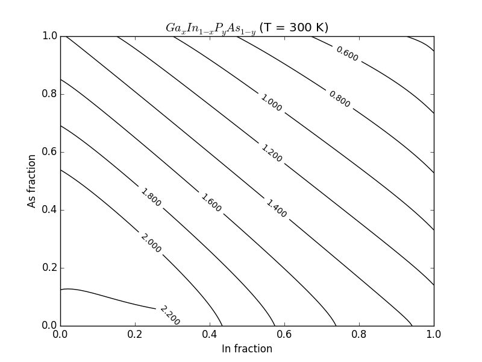

Source:
#
# Copyright (c) 2013-2014, Scott J Maddox
#
# This file is part of openbandparams.
#
# openbandparams is free software: you can redistribute it and/or modify
# it under the terms of the GNU Affero General Public License as published
# by the Free Software Foundation, either version 3 of the License, or
# (at your option) any later version.
#
# openbandparams is distributed in the hope that it will be useful,
# but WITHOUT ANY WARRANTY; without even the implied warranty of
# MERCHANTABILITY or FITNESS FOR A PARTICULAR PURPOSE. See the
# GNU Affero General Public License for more details.
#
# You should have received a copy of the GNU Affero General Public License
# along with openbandparams. If not, see <http://www.gnu.org/licenses/>.
#
#############################################################################
# Make sure we import the local openbandparams version
import os
import sys
sys.path.insert(0,
os.path.abspath(os.path.join(os.path.dirname(__file__), '../..')))
from openbandparams import *
import matplotlib.pyplot as plt
import numpy
# Type 3 Quaternary
alloy = GaInPAs
# calculate the data
T = 300 # K
N = 100
xs = numpy.linspace(0, 1, N)
ys = numpy.linspace(0, 1, N)
X, Y = numpy.meshgrid(xs, ys)
Z = numpy.empty(shape=(N, N), dtype=numpy.double)
for i in xrange(N):
for j in xrange(N):
Z[i, j] = alloy(x=X[i, j], y=Y[i, j]).Eg(T=T)
# plot it
fig = plt.figure()
CS = plt.contour(1-X, 1-Y, Z, 10, colors='k')
plt.clabel(CS, inline=True, fontsize=10)
plt.title('$%s$ (T = %.0f K)' % (alloy.latex(), T))
plt.xlabel('%s fraction' % alloy.elements[1])
plt.ylabel('%s fraction' % alloy.elements[3])
if __name__ == '__main__':
import sys
if len(sys.argv) > 1:
output_filename = sys.argv[1]
plt.savefig(output_filename)
else:
plt.show()
Result:
